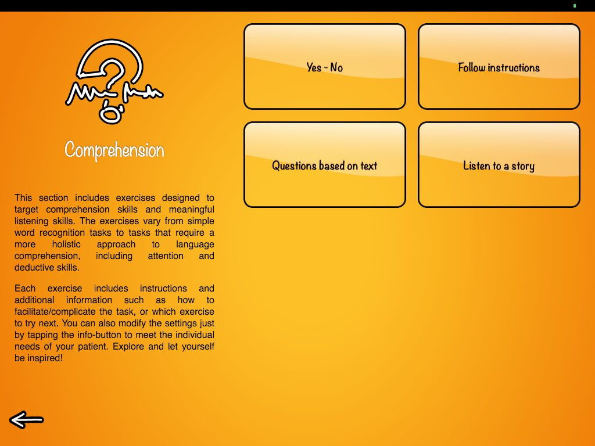
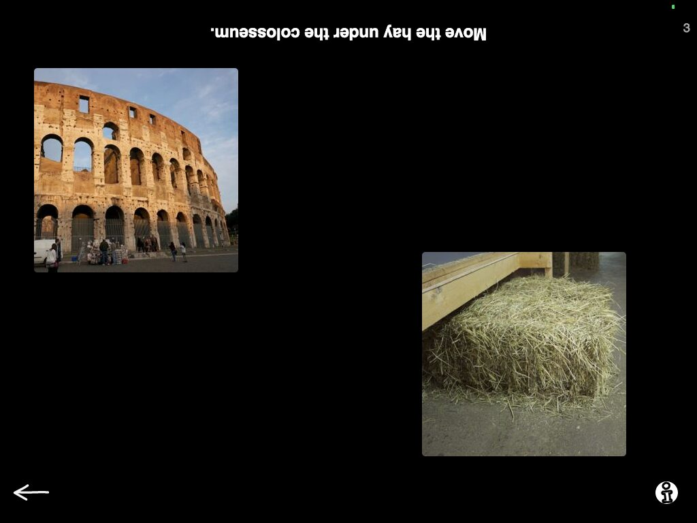
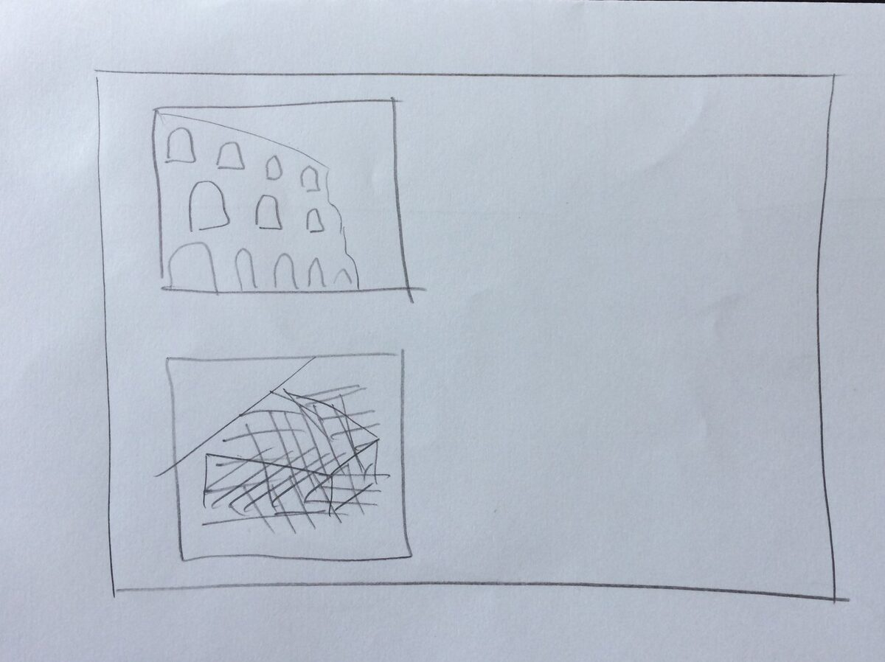
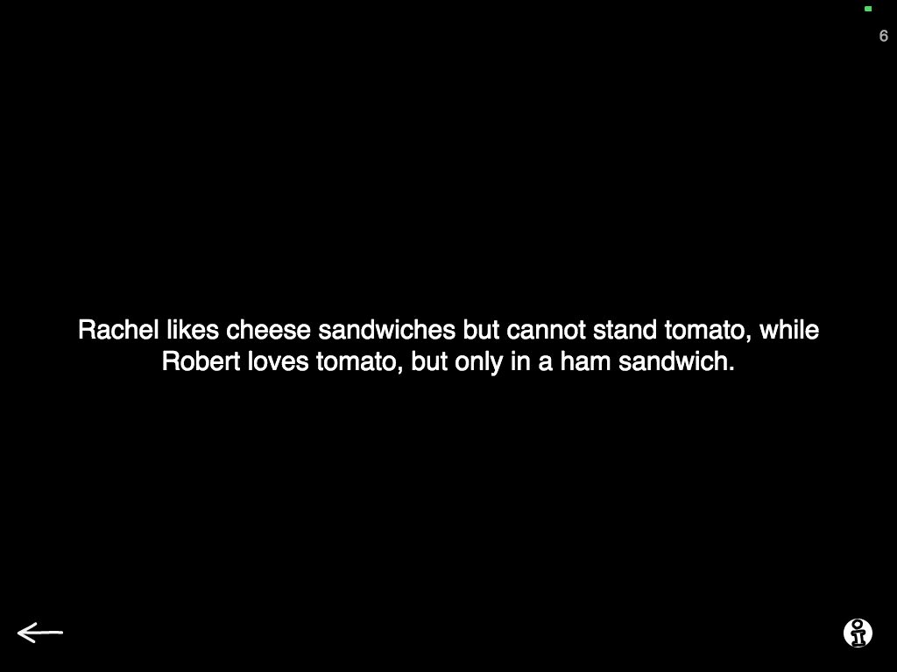
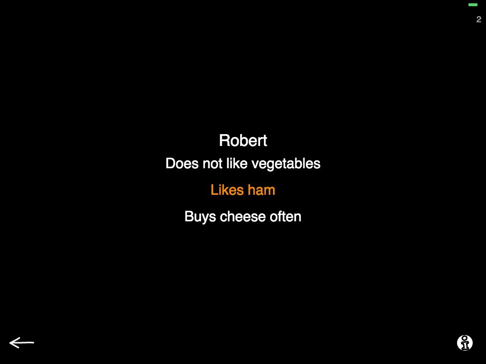
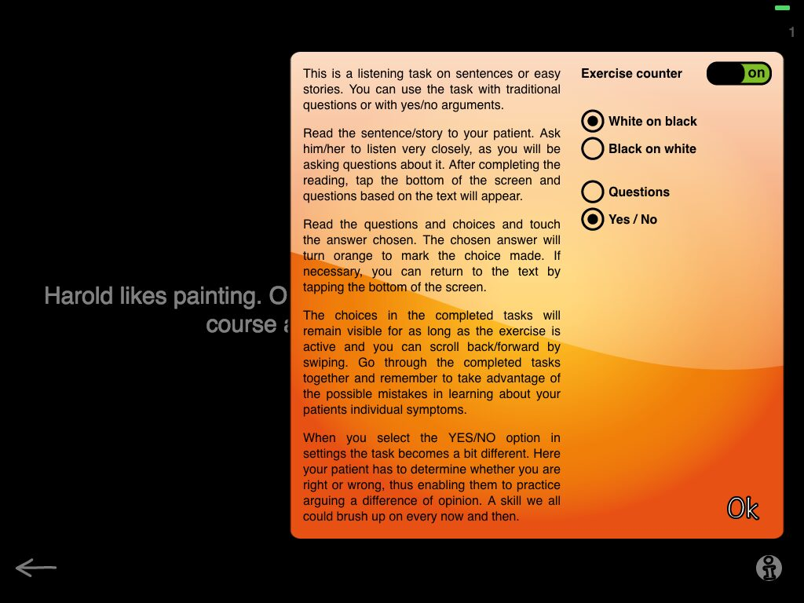
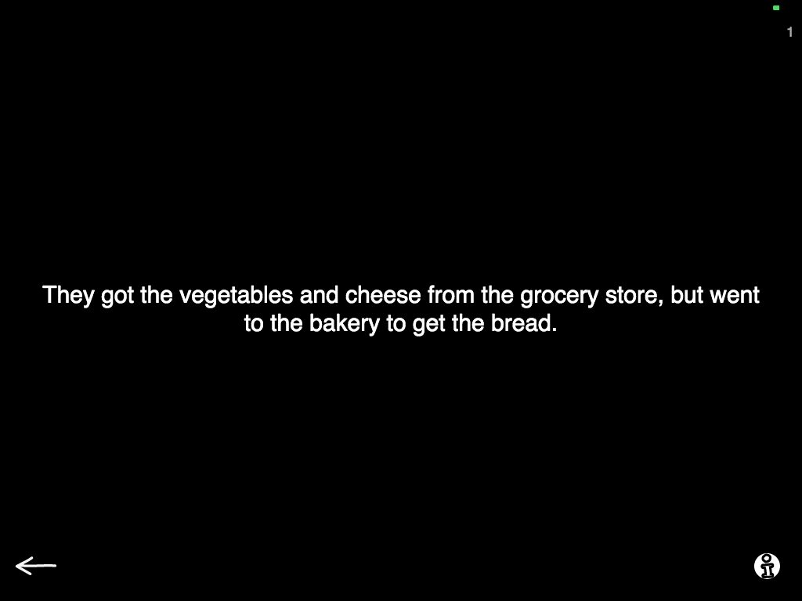
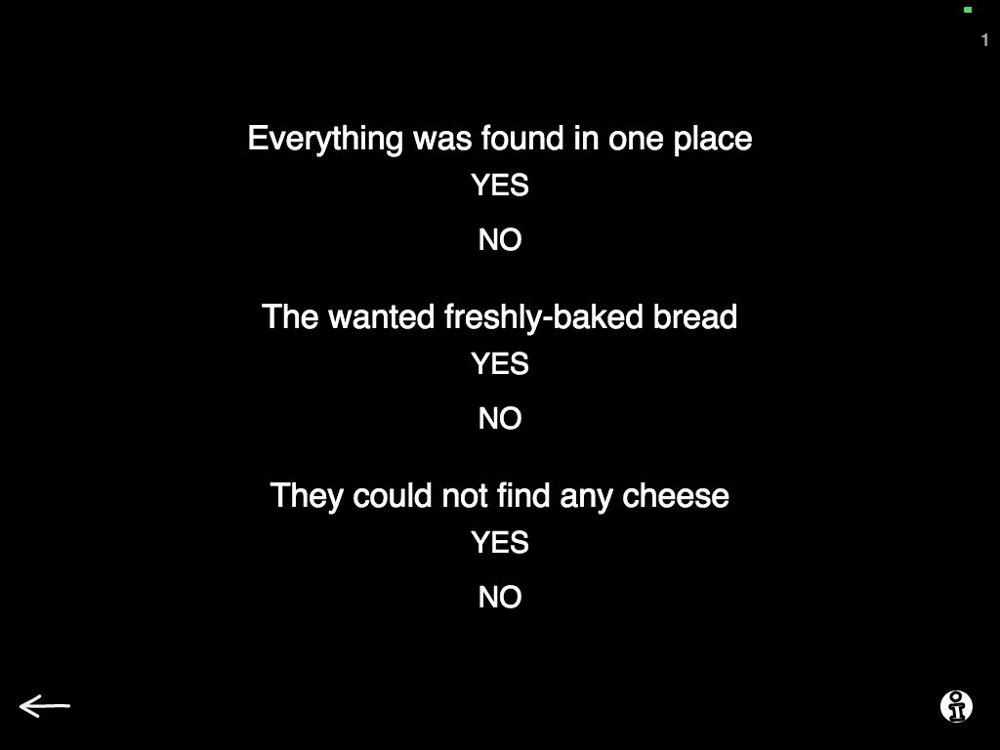

Comprehension tasks in speech therapy with adults — not the easiest nut to crack. Patients we work with on comprehension have, well, difficulties in understanding language so it can be a challenge to find common ground as to what we are trying to achieve with a given task. Some patients might not be very aware of their symptoms and think they are doing well in their everyday life, when in reality there are lots of difficulties or just drawing away from social situations where difficulties manifest themselves. There might be denial, frustration and all sorts of things going on around these problems.

Overall, comprehension can be a touchy subject. In therapy, I have found it easier to work on comprehension tasks together with the patient instead of making them work on tasks and me being the one who has the right answer. And of course - we incorporated some of this into Sanapsis!
Here you can see our Menu for Comprehension tasks in Sanapsis. Lets take a minute to explore a few of our tasks.

Follow instructions opens with basic settings: view of two images and a sentence on screen. You are to place the iPad on the table between you and your patient. Now you read the sentence to your patient and they arrange the images following directions you read out loud.
Our example shows you a task where your patient sees an image of the Colosseum and an image of a stack of hay. The (upside down) sentence reads: Move the hay under the Colosseum.

What I like to do in this task is to have a piece of paper handy and as we work trough the tasks with my patient I complete the task by drawing the images on a piece of paper as the patient is working on the same task on screen. Like you see in the picture here, just a quick drawing will do. After we complete a few tasks, we come back and compare notes. And correct each others work (yes, I make mistakes. Sometimes even intentionally).
I like this way of working because it enables us to work side by side with the patient and give feedback to each other — adding an extra layer to the task.
If you like a challenge, settings in this task allows you to add a third image and longer instructions on screen. You can also choose to use the task as a reading task where your patient sees the text alongside the images.
I also want to point out some cool stuff hiding in a task called Questions based on text.
Questions based on text opens to a screen with a piece of text, as you can see in the examples below. You read the text to your patient, asking them to listen carefully as you will be asking questions. After reading the text, you tap the screen and questions based on that text appear. To mark an answer you tap it and it changes color. Swipe back-forward to find new material and return to completed tasks. Pretty straightforward? Yes, I trust you all know what to do here and when this kind of task is appropriate to use.
If you want variation for the task, go to settings (tap the info-button on the right hand corner) and choose Yes/No instead of Questions.
When you return to the task you see a piece of text that you read to your patient. Tapping the screen provides material based on that text. But instead of questions, now you get to ask your patient to determinate if you are right or wrong. Again asking him/her to state an opinion and justifying it based on what they just heard. Very much like YES/NO questions but based on the text they just heard. Great stuff, right?
View fullsize

Basic settings, text View fullsize

Questions View fullsize

Settings-menu View fullsize

Yes/no, text View fullsize

Yes/no optionsAs you already know, Sanapsis does not give feedback. But why? We feel that when assessing and addressing real life skills we need to guide our patients to monitor themselves, recognize when they feel insecure about understanding what their communication partner is saying and help them find strategies in asking for clarification. Because real life situation do not beep when we get it wrong.
(However, sometimes there is a genuine need for feedback from the application, a more mechanical approach. Luckily we are not alone and there are many applications that are very useful for this. Just check out this amazing list by Tactus Therapy!)